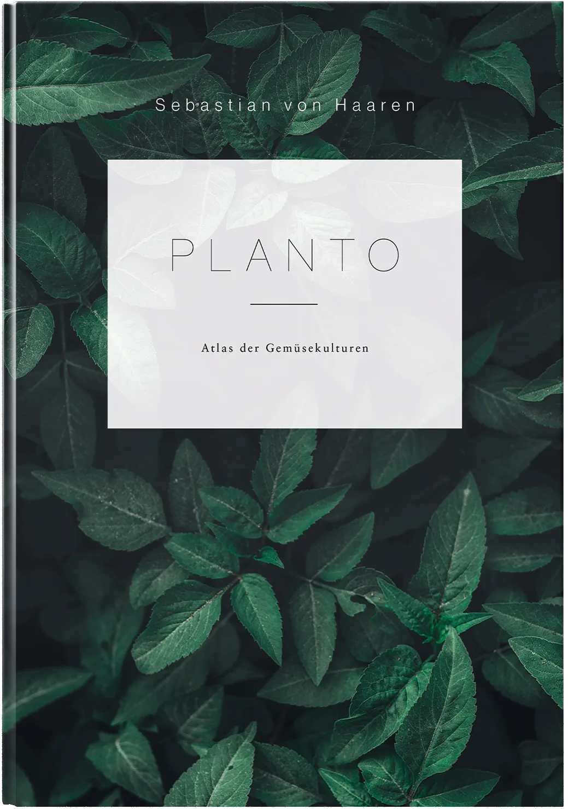
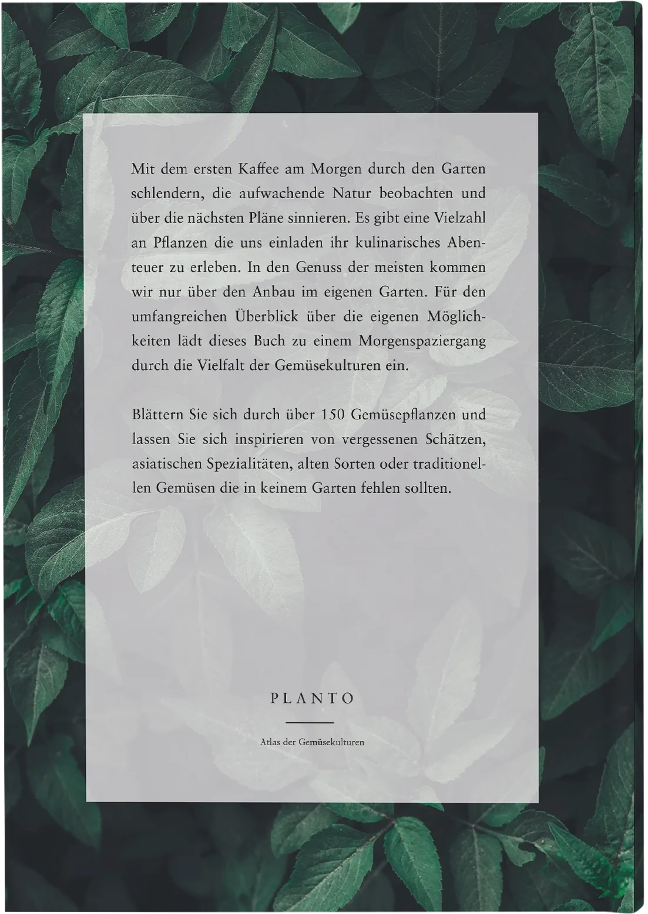

Planto
Atlas der Gemüsekulturen
Ein Buch, das ich geschrieben, gestaltet und vollständig gesetzt habe. Schön zum Blättern an einem Wintermorgen, nützlich in der Pflanzsaison.




Das Buch
Mit meinem ersten Buch, Planto – Atlas der Gemüsekulturen, habe ich einen Ratgeber zur Vielfalt essbarer Pflanzen geschrieben, gestaltet und vollständig gesetzt.
Es richtet sich an Hobbygärtner und alle, die neugierig darauf sind, ihr eigenes Essen anzubauen: genug Praxiswissen für den Anfang, mit Raum für eigene Entdeckungen.
Die Gestaltung
Eine klare, reduzierte Designsprache: großzügiger Weißraum, eine ruhige typografische Hierarchie und eine zurückhaltende Farbpalette für Klarheit und Fokus. Umschlag und Innenteil folgen der Haltung des Buchs: funktional und doch elegant, zugänglich, aber nicht simpel.
Aufbau
Editorial Design, Typografie und Informationsstruktur verbinden sich zu einem Leseerlebnis irgendwo zwischen Nachschlagewerk und persönlicher Inspiration.